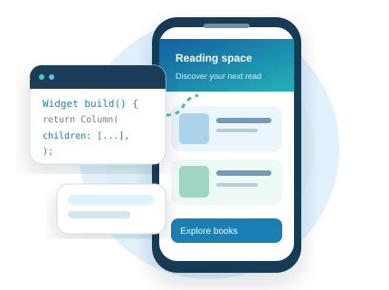
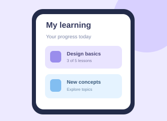
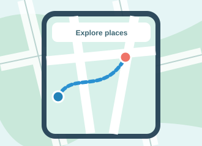
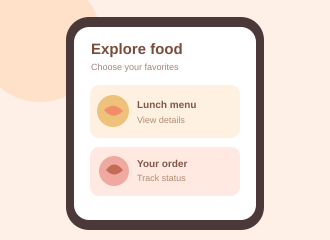
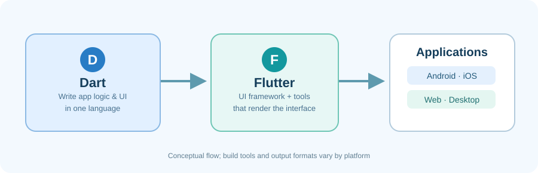
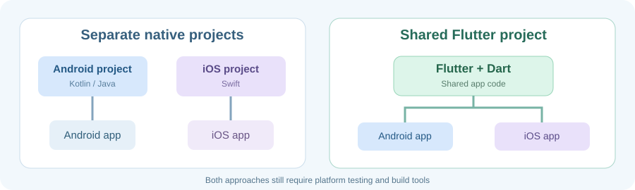
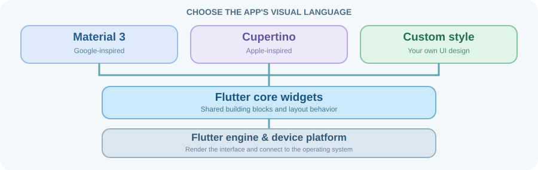
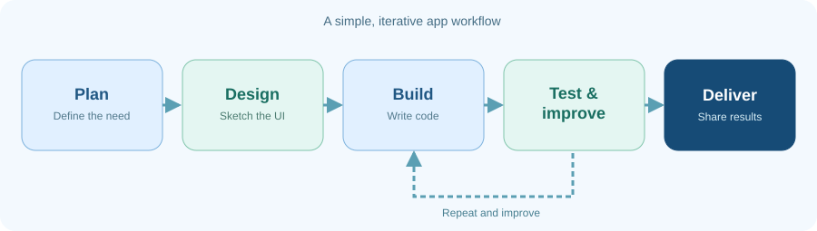

01
Understand
Learn how applications work and what makes an interface useful.
This course is about turning ideas into useful applications. Today, we’ll explore what you’ll learn, what makes Flutter interesting, and how we’ll work together.

Mobile Applications Development Using Flutter is a third-semester PDB2 course. You’ll begin with Dart and the development tools, then gradually build interfaces, interactions, forms, and data-connected applications.
We also have one primary course textbook and three supplementary reference books. You’ll find them in the syllabus section, where their relevant chapters are listed alongside up-to-date official documentation to support our lessons.
Learn how applications work and what makes an interface useful.
Follow demonstrations, write code, and develop apps step by step.
Test your work, debug problems, and explain your own decisions.
Today’s session is all about getting familiar with Flutter. We’ll explore key concepts through explanations, visuals, and short discussions, with a few optional questions to check your understanding. This is an introductory session, so no installation, coding, graded activities, or submissions are required.
What can you do with it? Which part of its interface makes the experience simple—or difficult?
Discuss aloud; no written answer or account registration needed.
Before learning to write a screen, look at what real applications help people do—from learning and exploring to getting daily tasks done.
These products appear in the official Flutter app showcase. The visuals below are our own simplified teaching illustrations, not screenshots or reproductions of those apps.

An example of supporting students with an app-based learning experience.

An example of exploring geographic information across devices.

An example of helping people order and track everyday services.
Real apps named above are officially showcased; illustrative screens are fictional, made for this Codelab.
Text, images, buttons, forms, menus and screens.
Can people find what they need, complete a task and understand what happens next?
It may have a saving feature—but would a new user know how to use it? Discuss the difference between functionality and usability.
They work together, but they are not the same thing. Knowing the difference makes the rest of the course easier to follow.

Conceptual illustration · A developer writes Dart code and uses Flutter APIs to describe the app's UI.
The language used to write an app's logic, variables, functions, objects, and Flutter UI code.
An open-source UI toolkit and SDK, providing core widgets, rendering, and development tools for multiple platforms.
Dart was selected to combine a fast development workflow with efficient apps and expressive UI code. Each reason below is a short teaching point—not a coding task.
Conceptual view: web targets have their own compilation pipeline, including JavaScript and WebAssembly. We will study the technical details later.
Further reading: Dart overview · Sound null safety
Flutter and Dart share an official mascot called Dash. Her profile below is our playful directory of trusted learning resources. No accounts or sign-ups needed today.
Dash is the official Flutter and Dart mascot. The classroom artwork above is an original, unofficial illustration for this course—not an official Flutter website avatar.
You already know programming fundamentals and OOP. Dart builds on those ideas; Flutter introduces a new way to describe a visual interface.
Traditionally, Android and iOS apps may be developed as separate projects. Flutter can reuse much of one Dart codebase across several platforms, while platform-specific tools and adaptations are still sometimes needed.

Conceptual comparison: shared code reduces duplication but does not remove platform requirements.
The value of Flutter goes beyond one codebase. These points cover development costs, consistency, community, performance and native integration.
Shared project, multiple destinations. Platform-specific setup and adjustments may still be necessary.
Looking ahead: Flutter can be embedded in smart displays, vehicle interfaces and other custom systems. This is a possibility—not a promise that watchOS or every smartwatch is an officially supported Flutter target.
Further reading: Official Flutter FAQ · Embedded Flutter
Mobile apps
Mobile apps
Browser apps
Desktop apps
Desktop apps
Desktop apps
We’ll use Chrome for the first Flutter run (Session 04). It’s a practical starting point for typical student laptops, without requiring an Android emulator immediately.
One shared codebase is not a promise of identical appearance, device features, or build tools on every platform. For example, producing an iOS app requires Apple-specific tools.
Consider download size, laptop capabilities, and how quickly students can see their results.
A widget is a building block that describes part of a Flutter interface. A screen is built by combining smaller pieces, just like a page is composed of headings, images and buttons.
Flutter can draw detailed interfaces while offering reusable widgets, platform design styles and room for fully custom visuals.
Original HTML illustrations, not real Flutter apps. Same content; different styling choices.
Further reading: Flutter architectural overview
The Flutter core provides common building blocks. Material 3 follows Google’s design language; Cupertino follows Apple’s. A developer can also create a custom style.

Original simplified illustration based on current official Flutter UI documentation.
Commonly used for Android-style and general cross-platform interfaces.
Familiar iOS-style navigation, controls and interaction patterns.
Material and Cupertino are available as independently maintained design-system packages. This changes how the libraries are organized—not the basic idea that Flutter builds interfaces from widgets. We’ll handle package choices when we begin coding.
Tap a part to see its role. This is an HTML illustration, not an actual Flutter app.
Try naming three visual pieces. You do not need to know their Flutter class names yet.
App development is iterative. Developers create a version, test it, learn from what happens, and make improvements.

Identify the user and the task.
Sketch how the screen should work.
Write the Dart and Flutter code.
Check behavior and fix problems.
You've already built websites using HTML, CSS, and JavaScript. Great news! Many of the ideas you've learned will help you understand Flutter. The concepts are familiar, but the tools are different.
Build an interface from components such as Text, Image, Row, and Column.
Define colors, spacing, typography, and layout using widget properties and themes.
Respond to user actions, process data, and update the application's interface.
Imagine creating a simple welcome screen. Both approaches can produce a similar result. What changes is how we build it.
Ready to start learning?
HTML defines the elements. CSS styles them. JavaScript can handle interactions. The browser renders the page.
Ready to start learning?
Dart describes the interface using Flutter widgets. Widget properties control appearance, while Dart also implements behavior. Flutter renders the interface.
In web development, HTML, CSS, and JavaScript work together. In Flutter, Dart and widgets express structure, appearance, and behavior. These are conceptual connections, not exact one-to-one equivalents. Flutter can also target the web!
Flutter supports hot reload during development, helping developers see many code changes without restarting the entire app. Try an illustrative color change and observe the mobile interface.
Simulation only.
Ready for your next lesson?
Illustrative mobile app preview
In the next sessions, you'll install your tools, practice Dart, then run an actual Flutter app. Today's preview is conceptual only.
SICT235 is a third-semester PDB2 course. It follows progressive project-based learning: each topic prepares you to build more complete apps.
Read the original SICT235 — Mobile Applications Development Using Flutter course outline, including objectives, the week-by-week roadmap, assessment policy, and learning references.
If the PDF preview is unavailable on your device, use Open full course plan above.
Short demonstrations and visual explanations introduce each idea.
Guided coding, independent practice and debugging develop skills.
Explain your code, consult documentation and respond to feedback.
Sessions may be remote or in person; teaching materials and instructions will be shared through the course communication channels.
Orientation, setup, Dart language essentials, and your first Flutter run.
Widgets, themes, assets, layouts, reusable components, scrolling, responsive lists and grids.
Local state, interaction, keys, navigation and data passing.
Demonstrate your skills and learn from feedback.
Validation, Provider, asynchronous Dart, and simple local persistence.
JSON, REST CRUD, FutureBuilder, a brief introduction to Streams, and app delivery.
Practical work, project demonstration and individual discussion.
We will learn from four carefully selected references, not follow one book page by page. Each book has a different role, and the instructor will identify the relevant readings as we progress.
Fourth Edition
A friendly explanation of what Flutter does and how widgets become applications.
Build Cross-Platform Mobile Apps, Step by Step
Start with Dart, then move to Flutter. Clear language and programming foundations.
Publisher / official book pageThird Edition
Short, focused recipes for setting up, building and troubleshooting apps.
Publisher / official book pageFourth Edition
Illustrated introductions to widgets, interface composition and app design.
Publisher / official book pageToday: only explore the four book titles and the introductory chapters listed above—no reading or submission is required. Later: follow the chapter references in each Codelab, then check the official Flutter and Dart documentation for current APIs and tooling. Some publisher pages may require access or purchase.
The components below total 100 marks. Details follow the published SICT235 course plan.
3 sessions per teaching week · 2 hours per session · OOP and Web Development/Design are prerequisites.
Guided blended learning, live coding in later sessions, independent practice, debugging, documentation, code reviews, and individual feedback.
A few habits will help us work effectively, especially when learning from different places and devices.
Check the covered topics and assignments when you miss a meeting.
Attribute external resources, work independently, and be able to explain submitted work.
Work is not accepted after an activity has been graded and returned or a solution has been posted.
Use documentation, investigate errors, and ask focused questions.
These questions are for conversation and recall only. They do not affect your course grade.
Use the remaining time for questions and a discussion of students' devices and internet constraints. Installation begins next session.